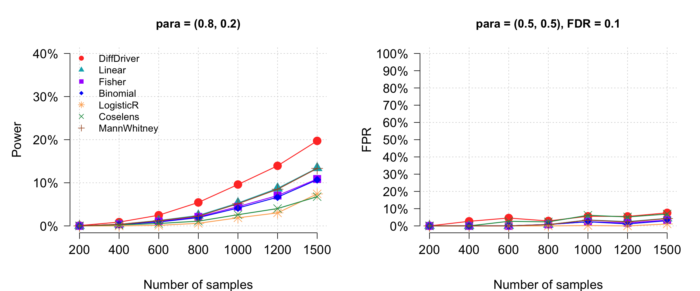
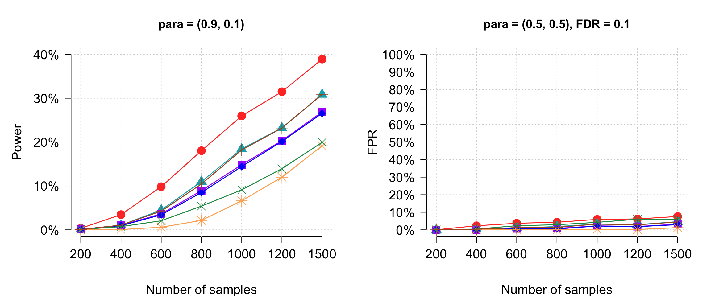
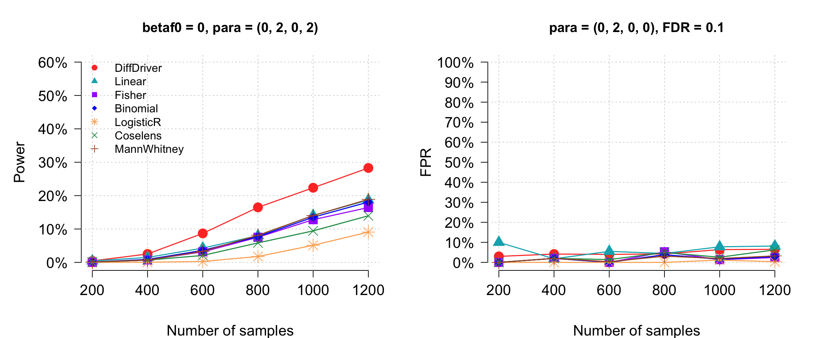
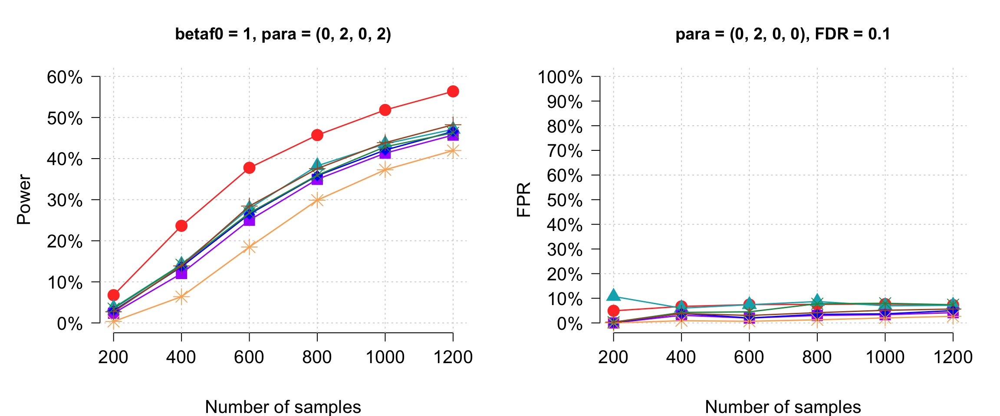
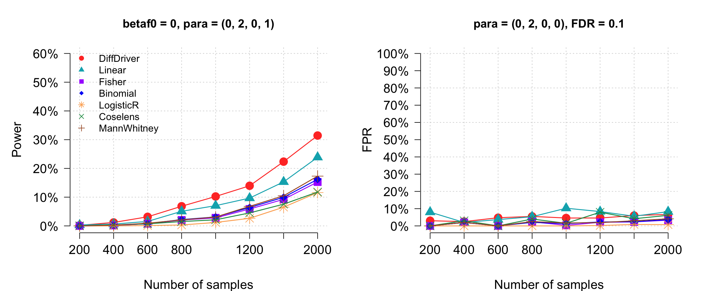
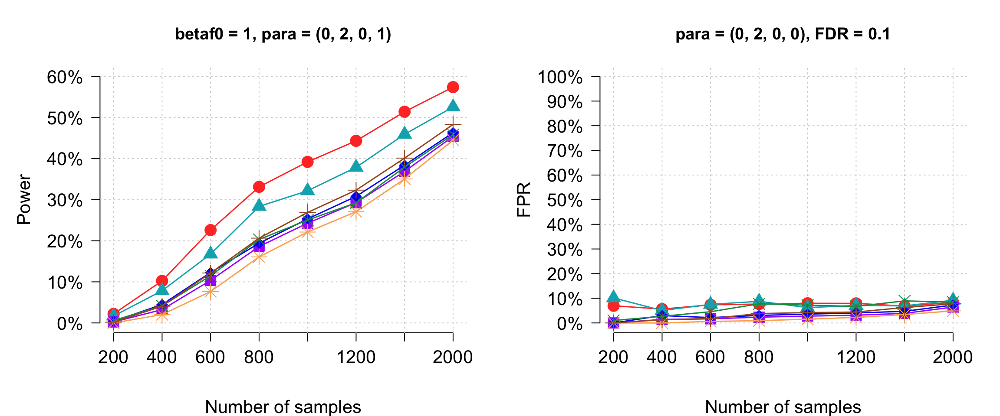
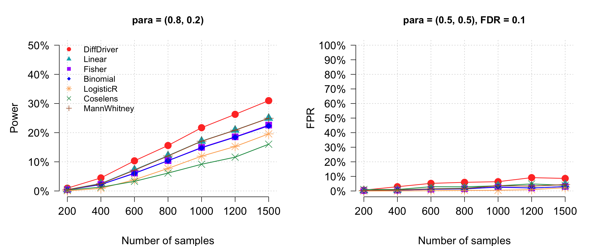
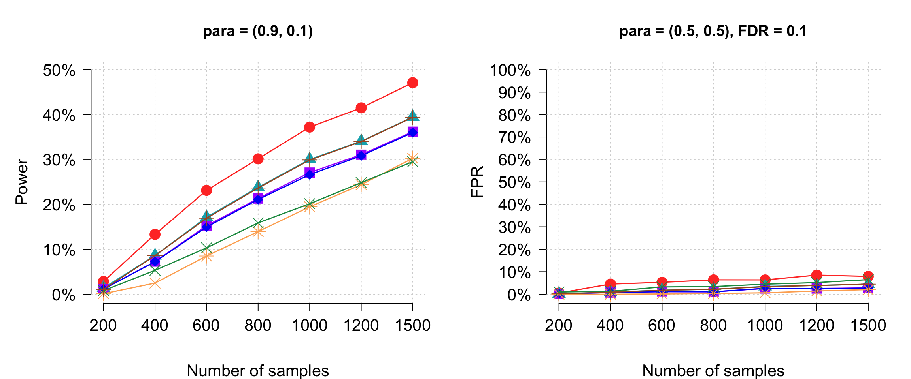
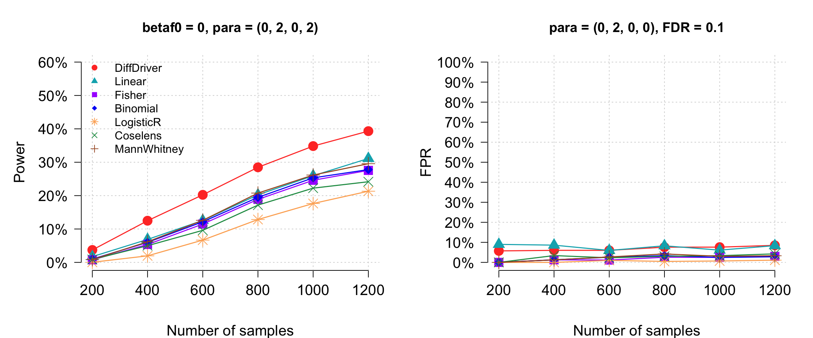
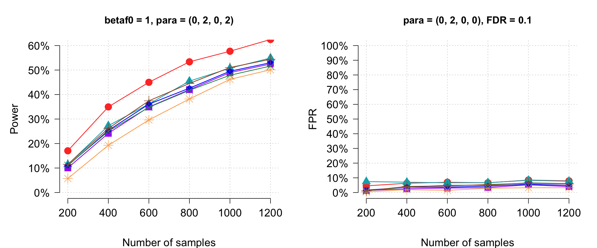

Last updated: 2026-07-25
Checks: 6 1
Knit directory: DiffDriver-PAPER/
This reproducible R Markdown analysis was created with workflowr (version 1.7.1). The Checks tab describes the reproducibility checks that were applied when the results were created. The Past versions tab lists the development history.
The R Markdown file has unstaged changes. To know which version of
the R Markdown file created these results, you’ll want to first commit
it to the Git repo. If you’re still working on the analysis, you can
ignore this warning. When you’re finished, you can run
wflow_publish to commit the R Markdown file and build the
HTML.
Great job! The global environment was empty. Objects defined in the global environment can affect the analysis in your R Markdown file in unknown ways. For reproduciblity it’s best to always run the code in an empty environment.
The command set.seed(20260206) was run prior to running
the code in the R Markdown file. Setting a seed ensures that any results
that rely on randomness, e.g. subsampling or permutations, are
reproducible.
Great job! Recording the operating system, R version, and package versions is critical for reproducibility.
Nice! There were no cached chunks for this analysis, so you can be confident that you successfully produced the results during this run.
Great job! Using relative paths to the files within your workflowr project makes it easier to run your code on other machines.
Great! You are using Git for version control. Tracking code development and connecting the code version to the results is critical for reproducibility.
The results in this page were generated with repository version 2efa957. See the Past versions tab to see a history of the changes made to the R Markdown and HTML files.
Note that you need to be careful to ensure that all relevant files for
the analysis have been committed to Git prior to generating the results
(you can use wflow_publish or
wflow_git_commit). workflowr only checks the R Markdown
file, but you know if there are other scripts or data files that it
depends on. Below is the status of the Git repository when the results
were generated:
Ignored files:
Ignored: .DS_Store
Ignored: .claude/
Ignored: analysis/.Rhistory
Ignored: code/.Rhistory
Ignored: data/.DS_Store
Untracked files:
Untracked: data/sgannosig.Rd
Untracked: data/sgmatrixsig.Rd
Unstaged changes:
Modified: analysis/simulation-power.Rmd
Note that any generated files, e.g. HTML, png, CSS, etc., are not included in this status report because it is ok for generated content to have uncommitted changes.
These are the previous versions of the repository in which changes were
made to the R Markdown (analysis/simulation-power.Rmd) and
HTML (docs/simulation-power.html) files. If you’ve
configured a remote Git repository (see ?wflow_git_remote),
click on the hyperlinks in the table below to view the files as they
were in that past version.
| File | Version | Author | Date | Message |
|---|---|---|---|---|
| Rmd | 80adace | Siming | 2026-07-24 | Fix mislabeled continuous figure titles (TSG_conti & OG_conti are slope=2) |
| html | 80adace | Siming | 2026-07-24 | Fix mislabeled continuous figure titles (TSG_conti & OG_conti are slope=2) |
| Rmd | 999a9b3 | Siming | 2026-07-23 | Extend TSG continuous slope=1 figures to N=1500 and 2000 |
| html | 999a9b3 | Siming | 2026-07-23 | Extend TSG continuous slope=1 figures to N=1500 and 2000 |
| Rmd | d0993ed | Siming | 2026-07-23 | Add TSG continuous slope=1 (para=(0,2,0,1)) power/FDR figures |
| html | d0993ed | Siming | 2026-07-23 | Add TSG continuous slope=1 (para=(0,2,0,1)) power/FDR figures |
| Rmd | c5e54ee | Siming | 2026-07-11 | Reproduce signature-confounding BMR sim, add Mann-Whitney, clean up simulate_functions.R |
| Rmd | e8b9fb5 | Siming | 2026-07-04 | Use distinct marker per method in the power/FPR figures |
| html | e8b9fb5 | Siming | 2026-07-04 | Use distinct marker per method in the power/FPR figures |
| html | 72c6648 | Siming | 2026-07-04 | Add coselens + Mann-Whitney to all benchmark figures (all 6 settings) |
| Rmd | 60a4e51 | Siming | 2026-07-04 | Add Mann-Whitney test to the benchmark (TSG_binary_0.8) |
| html | 60a4e51 | Siming | 2026-07-04 | Add Mann-Whitney test to the benchmark (TSG_binary_0.8) |
| Rmd | 75326b2 | Siming | 2026-07-04 | Add coselens to the TSG_binary_0.8 power/FPR plot |
| html | 75326b2 | Siming | 2026-07-04 | Add coselens to the TSG_binary_0.8 power/FPR plot |
| Rmd | 90bcec6 | Siming | 2026-07-04 | Drop the single-gene ‘Results’ header (keep the results chunk) |
| html | 90bcec6 | Siming | 2026-07-04 | Drop the single-gene ‘Results’ header (keep the results chunk) |
| Rmd | 1cfd49c | Siming | 2026-07-03 | Move consolidated results into each setting’s original folder |
| html | 1cfd49c | Siming | 2026-07-03 | Move consolidated results into each setting’s original folder |
| Rmd | 81ae711 | Siming | 2026-07-03 | Merge simulation pages; add single-gene, 200-gene, and Figure 3 sections |
| html | 81ae711 | Siming | 2026-07-03 | Merge simulation pages; add single-gene, 200-gene, and Figure 3 sections |
This document runs a simulation study to evaluate the power of the DiffDriver model. The simulation pipeline has three steps:
simulate_selection).ddmodel_binary (or ddmodel for continuous
phenotypes) to the simulated data to obtain a p-value
(run_one_iteration).run_simulation).Note: The Run simulation with a single gene section below demonstrates the pipeline for one gene. The Run simulation on 200 genes section then reports the full aggregated comparison, reproducing Figure 3 in the paper.
| File | Description |
|---|---|
code/simulate_functions.R |
simulate_hotspot_seq() — generates hotspot indicator
sequence via HMM; simulate_selection() — simulates
phenotypes, selection, and mutations for one gene (background rate is
constant across samples); run_selection_diffdriver() /
run_selection_benchmarks() — run
simulate_selection() over Niter iterations and
apply DiffDriver / the benchmark tests |
code/run_simulation.R |
run_one_iteration() — single iteration: simulate then
test; run_simulation() — loop over iterations |
code/simulate_all_genes.R |
master script: loops power_compare*() over all 200
genes for a given setting (see Data
generation) |
Warning: package 'data.table' was built under R version 4.3.3TSGpars): intercept, functypecode8, mycons, sift,
phylop100, MA.| Parameter | Value | Description |
|---|---|---|
betaf0 |
1 | Baseline functional effect size (log-scale fold change) |
number_sample |
1200 | Total number of samples (split equally into case/control) |
gene_index |
1 | Index into ri200/fanno200 for the target gene |
ifbinary |
TRUE | Use binary (case/control) phenotype |
Niter |
1 | Number of simulation iterations |
para |
(0.5, 0.5) | Binary: c(selection prob for cases, selection prob for controls). Continuous: c(mean, sd, intercept, slope) where intercept and slope are logistic regression coefficients determining selection probability as a function of phenotype |
hot |
0 | Hotspot flag (0 = no hotspot effect) |
simuresdiff <- run_simulation(
binary = ifbinary,
Niter = Niter,
sganno = ri200[[gene_index]],
sgmatrix = fanno200[[gene_index]],
bmrpars = log(BMR),
Nsample = number_sample,
betaf0 = betaf0,
beta_gc = beta_gc,
para = para,
hot = 0,
hmm = hmm
)[1] 1P-values: 0.8847664 Number of mutations: 9 For 200 genes with five functional annotations, we compare the power (sensitivity) and false positive rate (FPR) of DiffDriver against benchmark methods: Linear regression, Fisher’s exact test, Binomial test, and Logistic Regression.
The first 50 genes have differential selection while the remaining 150 do not. FDR is controlled at 0.1 using the BH procedure.
These simulations use the same pipeline described in the simulation pipeline above. The key parameters are:
| Parameter | Description |
|---|---|
betaf0 |
Baseline functional effect size: 0 or 1 |
para |
Binary: selection probabilities c(prob_case, prob_control). Continuous: c(mean, sd, intercept, slope) |
beta_gc |
Simulation functional effect coefficients — the true effect sizes
used to generate mutations (from data/beta_tsg.Rd or
data/beta_og.Rd) |
Nsample |
Varies: 200, 400, 600, 800, 1000, 1200, 1500 |
Niter |
100 (binary) or 50 (continuous) per gene |
Two distinct coefficient sets are involved and should not be confused.
Simulation coefficients (beta_gc) — the
true functional effect sizes used to generate the mutations,
loaded from data/beta_tsg.Rd /
data/beta_og.Rd:
(Intercept)=0.851, functypecode8=0.614, mycons=0.375, sift=0.166, phylop100=0.358, MA=0.223(Intercept)=0.450, functypecode8=0.049, mycons=0.806, sift=-0.078, phylop100=0.664, MA=0.089DiffDriver built-in parameters — the fixed
coefficients DiffDriver uses when it is run (the
diffFix method’s beta_gcFix). These are a
property of the fitted model, not of the simulation:
(Intercept)=0.851, functypecode8=0.458, mycons=0.137, sift=0.124, phylop100=0.083, MA=0.306(Intercept)=0.450, functypecode8=-0.186, mycons=0.316, sift=0.020, phylop100=0.256, MA=0.140All result files below were produced by the master script
code/simulate_all_genes.R, which loops over all 200 genes
for a given setting (consolidating the original per-gene scripts). It is
run once per setting and method:
METHOD is diffFix (DiffDriver) or
other (the benchmark methods: Linear, Fisher, Binomial,
Logistic); each folder stores the two methods’ .Rd outputs
in its diffFix/ and other/ subdirectories.
SETTING selects the gene set, phenotype, and selection
probability. The exact command for each folder is shown with its results
below.
The master script sources code/simulate_functions.R, so
the mutations are generated by the same
simulate_selection() function documented in the pipeline above (the
run_selection_diffdriver /
run_selection_benchmarks drivers there call it and apply
DiffDriver / the benchmark tests); the diffdriver package supplies the
underlying model and test functions.
knitr::opts_chunk$set(echo = TRUE)
METHODS <- c("DiffDriver", "Linear", "Fisher", "Binomial", "LogisticR")
# Colours 6+ are for the extra methods (coselens, Mann-Whitney), added only for
# settings that have the corresponding pppower_all_<SETTING>_<method>.Rd (load_and_compute).
MYCOL <- c("#FF3D2E", "#00AFBB", "#aa00ff", "#0001f6", "#fdae61", "#1a9850", "#a65628")
# Distinct marker per method (same order as MYCOL) so overlapping points stay distinguishable.
PCH <- c(19, 17, 15, 18, 8, 4, 3)
FDR <- 0.1
BINARY_SIZES <- c(200, 400, 600, 800, 1000, 1200, 1500)
CONTI_SIZES <- c(200, 400, 600, 800, 1000, 1200)
CONTI_SIZES_EXT <- c(200, 400, 600, 800, 1000, 1200, 1500, 2000) # slope=1 setting runs to 2000
# Each setting's consolidated results (pppower_all_<SETTING>_<METHOD>.Rd, produced by
# code/consolidate_results.R) live in that setting's original folder under DD.
DD <- "/Volumes/Szhao/jiezhou/diffdata"
SETTING_DIR <- c(
TSG_binary_0.8 = file.path(DD, "gene239/conti/TSG_BRCA"),
TSG_binary_0.9 = file.path(DD, "gene239/conti/TSG_BRCA/TSG0.9/TSG_gene"),
TSG_conti = file.path(DD, "gene239/conti/TSG_BRCA/conti/conti2"),
TSG_conti_slope1 = file.path(DD, "gene239/conti/TSG_BRCA/conti/conti_slope1"),
OG_binary_0.8 = file.path(DD, "binaryEM/OG_gene"),
OG_binary_0.9 = file.path(DD, "binaryEM/OG_gene"),
OG_conti = file.path(DD, "gene239/conti/OCG/OG_gene")
)
#' Compute power and FPR from p-value matrices across simulation iterations.
#' @param m.pvalue List of matrices (one per method), each n_genes x Nsim.
#' @param Nsim Number of simulation iterations.
#' @param n_true Number of true positive genes (first n_true genes).
compute_metrics <- function(m.pvalue, Nsim, n_true = 50) {
n_methods <- length(m.pvalue)
power <- fpr <- numeric(n_methods)
for (k in seq_len(n_methods)) {
sens <- fpr_vals <- numeric(Nsim)
for (j in seq_len(Nsim)) {
hits <- which(p.adjust(m.pvalue[[k]][, j], method = "BH") < FDR)
if (length(hits) > 0) {
sens[j] <- sum(hits <= n_true) / n_true
fpr_vals[j] <- sum(hits > n_true) / length(hits)
}
}
power[k] <- mean(sens)
fpr[k] <- mean(fpr_vals)
}
list(power = power, fpr = fpr)
}
#' Load consolidated simulation results and compute power/FPR per sample size.
#'
#' Each setting has two consolidated files in its folder (SETTING_DIR[[setting]]),
#' pppower_all_<setting>_diffFix.Rd and _other.Rd, each holding a list
#' `simures_all` keyed by the per-gene filename stem. The p-values are:
#' DiffDriver = diffFix result$m1.pvalue
#' Linear/Fisher/Binomial/LogisticR = other result$m1--m4.pvalue
#'
#' @param setting Setting name (e.g. "TSG_binary_0.8") selecting the two files.
#' @param file_fn Function(Nsample, gene_index) returning the per-gene .Rd name;
#' its stem (without .Rd) is the key into simures_all.
#' @param sample_sizes Vector of sample sizes to evaluate.
#' @param Nsim Max number of iterations to use. If NULL, uses all available.
#' @param n_genes Number of genes (default 200).
load_and_compute <- function(setting, file_fn, sample_sizes,
Nsim = NULL, n_genes = 200) {
base <- SETTING_DIR[[setting]]
ed <- new.env(); load(file.path(base, sprintf("pppower_all_%s_diffFix.Rd", setting)), envir = ed)
eo <- new.env(); load(file.path(base, sprintf("pppower_all_%s_other.Rd", setting)), envir = eo)
diff_all <- ed$simures_all
other_all <- eo$simures_all
# Extra methods (coselens, Mann-Whitney) are added only where a consolidated file
# exists for the setting; each gene key holds a <field> p-value vector like the others.
EXTRA <- list(Coselens = "coselens.pvalue", MannWhitney = "mannwhitney.pvalue")
EXTRA_SFX <- c(Coselens = "coselens", MannWhitney = "mannwhitney")
extra_all <- list()
for (nm in names(EXTRA)) {
f <- file.path(base, sprintf("pppower_all_%s_%s.Rd", setting, EXTRA_SFX[[nm]]))
if (file.exists(f)) { ee <- new.env(); load(f, envir = ee); extra_all[[nm]] <- ee$simures_all }
}
methods <- c(METHODS, names(extra_all))
n_methods <- length(methods)
power_mat <- fpr_mat <- matrix(
nrow = n_methods, ncol = length(sample_sizes),
dimnames = list(methods, sample_sizes)
)
for (s in seq_along(sample_sizes)) {
N <- sample_sizes[s]
m.pvalue <- NULL
n_iter <- NULL
for (g in seq_len(n_genes)) {
key <- sub("\\.Rd$", "", file_fn(N, g))
sdiff <- diff_all[[key]]
soth <- other_all[[key]]
if (is.null(n_iter)) {
n_avail <- length(sdiff[["m1.pvalue"]])
n_iter <- if (!is.null(Nsim)) min(Nsim, n_avail) else n_avail
m.pvalue <- lapply(seq_len(n_methods), function(x)
matrix(nrow = n_genes, ncol = n_iter))
}
idx <- seq_len(n_iter)
m.pvalue[[1]][g, ] <- sdiff[["m1.pvalue"]][idx]
m.pvalue[[2]][g, ] <- soth[["m1.pvalue"]][idx]
m.pvalue[[3]][g, ] <- soth[["m2.pvalue"]][idx]
m.pvalue[[4]][g, ] <- soth[["m3.pvalue"]][idx]
m.pvalue[[5]][g, ] <- soth[["m4.pvalue"]][idx]
for (ei in seq_along(extra_all)) {
nm <- names(extra_all)[ei]
m.pvalue[[length(METHODS) + ei]][g, ] <- extra_all[[nm]][[key]][[EXTRA[[nm]]]][idx]
}
}
metrics <- compute_metrics(m.pvalue, n_iter)
power_mat[, s] <- metrics$power
fpr_mat[, s] <- metrics$fpr
}
list(power = power_mat, fpr = fpr_mat, methods = methods)
}
#' Plot power and FPR side by side.
#' @param res Output from load_and_compute (list with power and fpr matrices).
#' @param power_title Title for the power panel.
#' @param fpr_title Title for the FPR panel.
#' @param power_ylim Y-axis upper limit for the power panel.
#' @param show_legend Whether to show the method legend on the power panel.
plot_power_fpr <- function(res, power_title, fpr_title,
power_ylim = 0.4, show_legend = TRUE) {
x <- seq_len(ncol(res$power))
sizes <- colnames(res$power)
par(mfrow = c(1, 2), mar = c(5, 6, 4, 2))
# Power panel
plot(x, ylim = c(0, power_ylim), col = "white", ylab = "Power",
xlab = "Number of samples", yaxt = "n", xaxt = "n", bty = "n",
cex.lab = 1.3, mgp = c(4, 1, 0))
title(power_title)
yticks <- seq(0, power_ylim, 0.1)
axis(2, at = yticks, lab = paste0(yticks * 100, "%"), las = 2, cex.axis = 1.3)
axis(1, at = x, lab = sizes, cex.axis = 1.3)
grid()
for (r in seq_len(nrow(res$power))) {
points(x, res$power[r, ], col = MYCOL[r], pch = PCH[r], cex = 1.8)
lines(x, res$power[r, ], col = MYCOL[r], lwd = 1.5)
}
if (show_legend) {
mm <- rownames(res$power)
legend("topleft", legend = mm, col = MYCOL[seq_along(mm)],
lwd = 1, bty = "n", lty = NA, pch = PCH[seq_along(mm)])
}
# FPR panel
plot(x, ylim = c(0, 1), col = "white", ylab = "FPR",
xlab = "Number of samples", yaxt = "n", xaxt = "n", bty = "n",
cex.lab = 1.3, mgp = c(4, 1, 0))
title(fpr_title)
axis(2, at = seq(0, 1, 0.1), lab = paste0(seq(0, 100, 10), "%"),
las = 2, cex.axis = 1.3)
axis(1, at = x, lab = sizes, cex.axis = 1.3)
grid()
for (r in seq_len(nrow(res$fpr))) {
points(x, res$fpr[r, ], col = MYCOL[r], pch = PCH[r], cex = 1.8)
lines(x, res$fpr[r, ], col = MYCOL[r], lwd = 1.5)
}
}The panels below reproduce Figure 3: power (sensitivity) and false positive rate (FPR) versus sample size for DiffDriver against the benchmark methods, with one setting per subsection.
Generated by:
Rscript code/simulate_all_genes.R TSG_binary_0.8 diffFix
Rscript code/simulate_all_genes.R TSG_binary_0.8 otherres <- load_and_compute(
setting = "TSG_binary_0.8",
file_fn = function(N, g) paste0("pppower_betaf0=0_sample", N, "_", g, ".Rd"),
sample_sizes = BINARY_SIZES
)
plot_power_fpr(res,
power_title = "para = (0.8, 0.2)",
fpr_title = "para = (0.5, 0.5), FDR = 0.1"
)
Generated by:
Rscript code/simulate_all_genes.R TSG_binary_0.9 diffFix
Rscript code/simulate_all_genes.R TSG_binary_0.9 otherres <- load_and_compute(
setting = "TSG_binary_0.9",
file_fn = function(N, g) paste0("pppower_betaf0=0_sample", N, "_", g, ".Rd"),
sample_sizes = BINARY_SIZES
)
plot_power_fpr(res,
power_title = "para = (0.9, 0.1)",
fpr_title = "para = (0.5, 0.5), FDR = 0.1",
show_legend = FALSE
)
Continuous phenotype with para = c(0, 2, 0, 2):
phenotype ~ N(0, 2), selection probability determined by logistic
regression with intercept = 0 and slope = 2.
Generated by (one run produces both betaf0 = 0 and betaf0 = 1):
Rscript code/simulate_all_genes.R TSG_conti diffFix
Rscript code/simulate_all_genes.R TSG_conti otherres <- load_and_compute(
setting = "TSG_conti",
file_fn = function(N, g) paste0("pppower_betaf0=0_sample", N, "_", g, ".Rd"),
sample_sizes = CONTI_SIZES
)
plot_power_fpr(res,
power_title = "betaf0 = 0, para = (0, 2, 0, 2)",
fpr_title = "para = (0, 2, 0, 0), FDR = 0.1",
power_ylim = 0.6
)
res <- load_and_compute(
setting = "TSG_conti",
file_fn = function(N, g) paste0("pppower_betaf0=1_sample", N, "_", g, ".Rd"),
sample_sizes = CONTI_SIZES
)
plot_power_fpr(res,
power_title = "betaf0 = 1, para = (0, 2, 0, 2)",
fpr_title = "para = (0, 2, 0, 0), FDR = 0.1",
power_ylim = 0.6,
show_legend = FALSE
)
Continuous phenotype with a weaker selection slope,
para = c(0, 2, 0, 1): selection probability is a logistic
function of the phenotype with intercept = 0 and slope =
1 (vs. slope = 2 above). These figures also include coselens
and the Mann-Whitney test.
Generated by (one run produces both betaf0 = 0 and betaf0 = 1):
Rscript code/simulate_all_genes.R TSG_conti_slope1 diffFix
Rscript code/simulate_all_genes.R TSG_conti_slope1 otherres <- load_and_compute(
setting = "TSG_conti_slope1",
file_fn = function(N, g) paste0("pppower_betaf0=0_sample", N, "_", g, ".Rd"),
sample_sizes = CONTI_SIZES_EXT
)
plot_power_fpr(res,
power_title = "betaf0 = 0, para = (0, 2, 0, 1)",
fpr_title = "para = (0, 2, 0, 0), FDR = 0.1",
power_ylim = 0.6
)
res <- load_and_compute(
setting = "TSG_conti_slope1",
file_fn = function(N, g) paste0("pppower_betaf0=1_sample", N, "_", g, ".Rd"),
sample_sizes = CONTI_SIZES_EXT
)
plot_power_fpr(res,
power_title = "betaf0 = 1, para = (0, 2, 0, 1)",
fpr_title = "para = (0, 2, 0, 0), FDR = 0.1",
power_ylim = 0.6,
show_legend = FALSE
)
Generated by:
Rscript code/simulate_all_genes.R OG_binary_0.8 diffFix
Rscript code/simulate_all_genes.R OG_binary_0.8 otherres <- load_and_compute(
setting = "OG_binary_0.8",
file_fn = function(N, g) paste0("pppower_betaf0=0_sample", N, "_0.8_", g, ".Rd"),
sample_sizes = BINARY_SIZES
)
plot_power_fpr(res,
power_title = "para = (0.8, 0.2)",
fpr_title = "para = (0.5, 0.5), FDR = 0.1",
power_ylim = 0.5
)
Generated by:
Rscript code/simulate_all_genes.R OG_binary_0.9 diffFix
Rscript code/simulate_all_genes.R OG_binary_0.9 otherres <- load_and_compute(
setting = "OG_binary_0.9",
file_fn = function(N, g) paste0("pppower_betaf0=0_sample", N, "_0.9_", g, ".Rd"),
sample_sizes = BINARY_SIZES
)
plot_power_fpr(res,
power_title = "para = (0.9, 0.1)",
fpr_title = "para = (0.5, 0.5), FDR = 0.1",
power_ylim = 0.5,
show_legend = FALSE
)
Continuous phenotype with para = c(0, 2, 0, 2):
phenotype ~ N(0, 2), selection probability determined by logistic
regression with intercept = 0 and slope = 2.
Generated by (one run produces both betaf0 = 0 and betaf0 = 1):
res <- load_and_compute(
setting = "OG_conti",
file_fn = function(N, g) paste0("pppower_betaf0=0_sample", N, "_", g, ".Rd"),
sample_sizes = CONTI_SIZES
)
plot_power_fpr(res,
power_title = "betaf0 = 0, para = (0, 2, 0, 2)",
fpr_title = "para = (0, 2, 0, 0), FDR = 0.1",
power_ylim = 0.6
)
res <- load_and_compute(
setting = "OG_conti",
file_fn = function(N, g) paste0("pppower_betaf0=1_sample", N, "_", g, ".Rd"),
sample_sizes = CONTI_SIZES
)
plot_power_fpr(res,
power_title = "betaf0 = 1, para = (0, 2, 0, 2)",
fpr_title = "para = (0, 2, 0, 0), FDR = 0.1",
power_ylim = 0.6,
show_legend = FALSE
)
R version 4.3.2 (2023-10-31)
Platform: aarch64-apple-darwin20 (64-bit)
Running under: macOS Sonoma 14.6.1
Matrix products: default
BLAS: /System/Library/Frameworks/Accelerate.framework/Versions/A/Frameworks/vecLib.framework/Versions/A/libBLAS.dylib
LAPACK: /Library/Frameworks/R.framework/Versions/4.3-arm64/Resources/lib/libRlapack.dylib; LAPACK version 3.11.0
locale:
[1] en_US.UTF-8/en_US.UTF-8/en_US.UTF-8/C/en_US.UTF-8/en_US.UTF-8
time zone: America/New_York
tzcode source: internal
attached base packages:
[1] stats graphics grDevices utils datasets methods base
other attached packages:
[1] data.table_1.17.8 diffdriver_0.1.8 workflowr_1.7.1
loaded via a namespace (and not attached):
[1] Matrix_1.6-1.1 jsonlite_2.0.0 compiler_4.3.2 promises_1.5.0
[5] Rcpp_1.1.0 stringr_1.6.0 git2r_0.36.2 callr_3.7.6
[9] later_1.4.8 jquerylib_0.1.4 yaml_2.3.12 fastmap_1.2.0
[13] lattice_0.21-9 R6_2.6.1 knitr_1.51 tibble_3.3.1
[17] rprojroot_2.0.4 bslib_0.10.0 pillar_1.11.1 rlang_1.1.6
[21] cachem_1.1.0 stringi_1.8.7 httpuv_1.6.15 xfun_0.52
[25] getPass_0.2-4 fs_1.6.6 sass_0.4.10 otel_0.2.0
[29] cli_3.6.5 magrittr_2.0.3 ps_1.8.1 grid_4.3.2
[33] digest_0.6.39 processx_3.8.5 rstudioapi_0.17.1 lifecycle_1.0.5
[37] vctrs_0.6.5 evaluate_1.0.5 glue_1.8.0 whisker_0.4.1
[41] rmarkdown_2.29 httr_1.4.8 tools_4.3.2 pkgconfig_2.0.3
[45] htmltools_0.5.9